Fietskaarthouder
24 July, 2018
16:21
Niet tevreden over de op de markt verkrijgbare smartphone-houders voor de fiets, maar eens zelf geprobeerd iets te fabriceren.
De eerste ervaringen zijn zeer positief te noemen, opvallende punten hierbij
Eisen
Belangrijke eisen | Minder belangrijke eisen |
|
|
Eerste Resultaat
De basis wordt gevormd door een watervast multiplex plankje van 6mm dik. Dit plnakje is met ijzeren beugels (verwarmingspijp) op het stuur geklemd. De smartphone kan in twee plastic strips worden geschoven. | De smartphone wordt geborgd door een spijker (4 cm lang) bovenin in het midden (het hoesje heeft daar een metalen holnietje zitten. De laadkabel wordt via een buck converter gevoed uit de voorlamp van de fiets. |
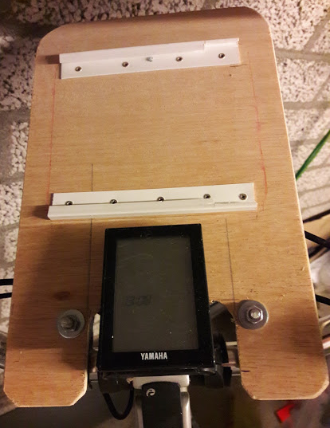
| 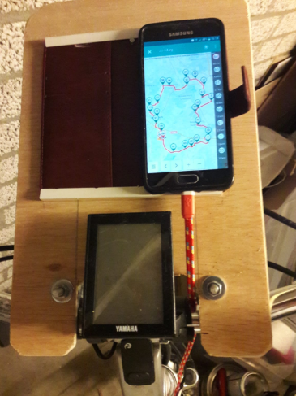
|
Inmiddels is ook een oplossing voor bescherming tegen de regen gevonden:
Zo'n multomap / ringband hoesje, waarvan de ringabnd is afgeknipt.
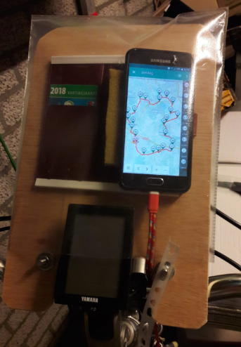
Op de foto is ook een stukje schuimrubber achter het toestel te zien, dat voorkomt dat ie gaat klapperen op hobbelige wegen. Dit is nog geen ideale oplossing.
Ook is te zien hoe het klepje van de tefoonhouder netjes erachter gestopt kan worden.
Smartphone Oplader
Voor de oplader wordt een mini-dc-360 buckconverter gebruikt. Deze kan ongekoeld 1 A leveren, heeft een lage drempelspanning, is heel klein en kost bijna niets.
De 1 slags potmeter, regelt het hele bereik van 5 tot 23 V en dus onbruikbaar voor op een trillende fiets. Vandaar dat deze is vervangen door een vaste weerstand van 36 kOhm. | De schakeling wordt ingegoten met hot-glue in een stukje standaard elektrabuis (3/8") |
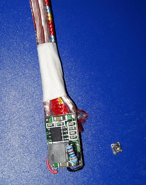
| 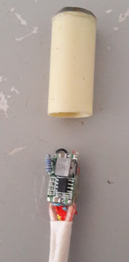
|
https://cdn-shop.adafruit.com/datasheets/MP2307_r1.9.pdf
De spanning op FB bedraagt 0.925V.
Met een vaste weerstand van 36 kOhm wordt een uitgangsspanning van 5.1 Volt geraliseerd.
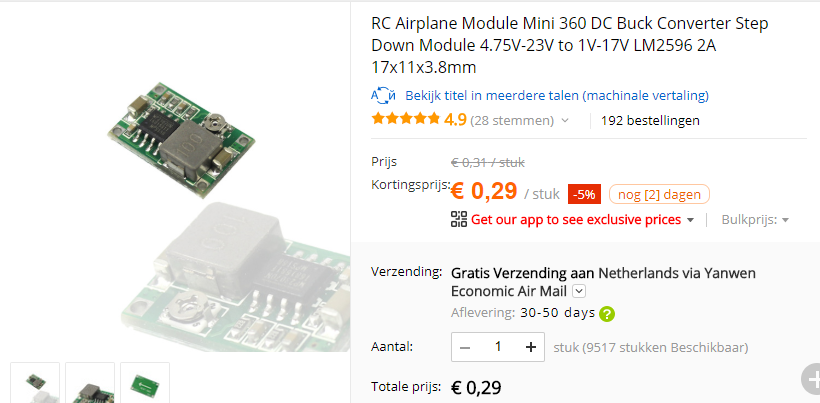
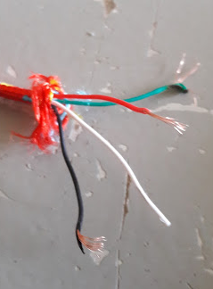
Fluke 79 III
22 July, 2018
22:16
v
Zero Cables
(0.01 resoltion, no beep)
1. Switch the instrument function to the Lo-Ohm continuity position.
2. Place a short across the VΩG and COM input Terminals.
3. Push the RANGE button for 1 second to initiate Lo-Ohm calibration.
4. Push the RANGE button again to calibrate Lo-Ohms
Ontslagvergoeding
30 June, 2018
9:58
Aa
FBTO vraag per email
Mijn partner is binnenkort 2 jaar ziek. De werkgever is nu begonnen met een ontslagaanvraag. Is het verstandig om hierbij juridische ondersteuning te hebben (ik hoor bijv dat er nog steeds mogelijkheden tot een transitievergoeding is) ?
Je hebt rechtshulp nodig. Hoe werkt dat?
Je hebt een FBTO Rechtsbijstandverzekering en je meldt je schade bij Stichting Achmea Rechtsbijstand. Hoe gaat het daarna verder? Je belt eerst met SAR. Stichting Achmea Rechtsbijstand (SAR) vertelt je meestal direct of je recht hebt op rechtsbijstand. Je krijgt direct advies van een jurist en antwoord op je vragen als je verzekerd bent voor deze zaak. Heeft de zaak verdere behandeling nodig? Dan krijg je een vaste contactpersoon die met jouw zaak aan de slag gaat. SAR is de grootste rechtshulpverlener van Nederland. Per jaar behandelen zij ongeveer 160.000 zaken. SAR werkt met 500 juristen in het hele land. Soms vragen ze iemand anders voor een zaak. Daarvoor werkt SAR samen met verschillende advocatenkantoren.
Pasted from <https://www.fbto.nl/rechtsbijstandverzekering/aanvullende-modules/paginas/werk-en-inkomen.aspx>
Recht op transitievergoeding na 2 jaar ziek zijn?
De werknemer die na 2 jaar ziek zijn ontslagen wordt heeft recht op een transitievergoeding. Die transitievergoeding kan fors uitvallen, vooral als de werknemer al lang in dienst is.
Het slapende dienstverband
Veel werkgevers kiezen er voor om de werknemer die 2 jaar ziek is niet te ontslaan, maar het dienstverband ‘slapend’ te houden. Omdat deze werkgevers dus niet tot ontslag overgaan, zijn zij ook geen transitievergoeding verschuldigd.
Gedupeerde werknemers
De werknemers die slapend in dienst worden gehouden hebben dus geen recht op een transitievergoeding en zijn ‘gedupeerd’.
Inmiddels hebben een aantal gedupeerde werknemers hun zaak voorgelegd aan de rechter. Maar de rechters oordeelden telkens dat: er geen verplichting voor de werkgever bestaat de arbeidsovereenkomst te beëindigen, ook als de werknemer 2 jaar of langer ziek is.
Het komt er dus op neer dat een werknemer geen transitievergoeding of vergoeding anderszins kan afdwingen bij een slapend dienstverband.
Regering werkt aan oplossing
Afgezien van het onderwerp transitievergoeding is geen enkele partij gebaat bij het slapend in stand houden van een dienstverband. Werknemer kan – zoals gezegd – geen aanspraak maken op een transitievergoeding, terwijl werkgever mogelijk in de toekomst geconfronteerd wordt met een van ziekte herstelde werknemer die weer bij hem aan de slag wil.
Gegeven de voor alle partijen nadelige situatie van het slapende dienstverband, werkt het kabinet Rutte III aan een oplossing. Het is de bedoeling dat werkgevers die werknemers die 2 jaar of langer ziek zijn ontslaan, de te betalen transitievergoeding gecompenseerd krijgen uit het Algemeen werkloosheidsfonds. Dat zal gaan gelden voor alle langdurig ( 2 jaar of langer) zieke werknemers die ná 30 juni 2015 zijn of worden ontslagen. De beoogde regeling heeft dus terugwerkende kracht.
Volgens minister Koolmees van Sociale Zaken is het de bedoeling dat de compensatie regeling ( die dus van toepassing is op ontslagzaken vanaf 1 juli 2015 ) uiterlijk 1 januari 2020 wordt ingevoerd.
Wat te doen bij aanbod vaststellingsovereenkomst bij langdurige ziekte?
Als Ontslagspecialist worden wij veelvuldig geconfronteerd met langdurig zieke werknemers die een vaststellingsovereenkomst krijgen gepresenteerd, waarbij geen of een zeer beperkte transitievergoeding wordt aangeboden. Op zichzelf mag een werkgever een dergelijk aanbod doen. Echter als werknemer hoeft u dat aanbod niet te accepteren. Als werknemer kunt u uw werkgever er op wijzen dat wettelijke regeling aanstaande is waarbij de werkgever volledig wordt gecompenseerd voor de transitievergoeding. Vraag werkgever daarom om de transitievergoeding. Laat desnoods een voorwaarde in de vaststellingsovereenkomst opnemen dat de transitievergoeding pas hoeft te worden voldaan zodra de aanstaande wettelijke regeling daadwerkelijk is ingevoerd.
Vraag rechtshulp bij uw vaststellingsovereenkomst
De advocaten en juristen van Ontslagspecialist zijn zeer ervaren in het beoordelen en uitonderhandelen van vaststellingsovereenkomst. Neem daarom altijd contact met ons op als u een vaststellingsovereenkomst krijgt aangeboden. Wij kunnen u adviseren en met uw werkgever onderhandelen voor het beste resultaat. Dus heeft u juridisch advies en rechtshulp nodig bij uw vaststellingsovereenkomst? Bel : 0900 – 123 73 24 of mail.
Pasted from <https://www.ontslagspecialist.nl/vaststellingsovereenkomst-na-2-jaar-ziekte.html>
https://www.recht-raad.nl/wat-is-een-vaststellingsovereenkomst
Stef Vergelijk
19 November, 2017
12:16
Uitgaande van pensioen op 1 april 2018
Als er geen waarde staat, betekent het dat de waarde gelijk is aan de cel links er van.
Nabestaande Pensioen (NB) minimaliseren levert nauwelijks iets op.
Is natuurlijk ook logisch, want::
Dus er moet lang een lager bedrag worden uitgekeerd
of
Kort een klein bedrag.
Loon maximaliseren levert een paar jaar flink wat extra, vergelijk de eerste 2 kolommen: Normaal / Loon max.
| Normaal | Loon max | NB min | Loon max NB min | Loon max++ NB min |
|
|
|
|
|
|
|
|
|
|
|
|
April 2018 | 3239 | 4543 | 3386 | 4545 | 4736 |
netto | 1927 | 2570 | 1999 | 2570 | 2674 |
November 2020 | 2419 | 2128 | 2566 | 2356 | 2321 |
netto | 1806 | 1635 | 1911 | 1761 | 1736 |
netto + AOW | 2360 | 2340 | 2440 | 2330 | 2310 |
overlijden <65, partner tot aan AOW | 1681 |
| 1581 |
|
|
netto | 977 |
| 977 |
|
|
overlijden <65, partner vanaf AOW | 1515 |
| 1515 |
|
|
netto | 1151 |
| 1151 |
|
|
overlijden 65,66, partner tot aan AOW | 1670 |
| 964 |
|
|
netto | 969 |
| 644 |
|
|
overlijden 65,66, partner vanaf AOW | 1504 |
| 847 |
|
|
netto | 1142 |
| 644 |
|
|
overlijden <65, partner tot aan AOW | 1711 |
| 816 |
|
|
netto | 991 |
| 474 |
|
|
overlijden <65, partner vanaf AOW | 1542 |
| 709 |
|
|
netto | 1171 |
| 539 |
|
|
Pasted from <file:///D:\Data_pri\ABP\ABC.xlsx>
Normaal
19 November, 2017
8:31
Aa
Pensioenvoorstel
Het onderstaande pensioenvoorstel is gebaseerd op de volgende keuzes:
Ouderdomspensioen
U gaat deze bedragen ontvangen van ABP:
(dit is exclusief de AOW-uitkering die u van de SVB ontvangt)
Vanaf 64 jaar en 1 maand
01 apr 2018
bruto per maand
€3.239
netto per maand
€1.927
Vanaf 66 jaar en 8 maanden
13 nov 2020
bruto per maand
€2.419
netto per maand
€1.806
Bij overlijden
Uw partner ontvangt de volgende bedragen van ABP:
Als u overlijdt voor uw 65ste
Tot zijn/haar AOW leeftijd
bruto per maand
€1.681
netto per maand
€977
Vanaf zijn/haar AOW leeftijd
bruto per maand
€1.515
netto per maand
€1.151
Als u overlijdt op uw 65ste of 66ste
Tot zijn/haar AOW leeftijd
bruto per maand
€1.670
netto per maand
€969
Vanaf zijn/haar AOW leeftijd
bruto per maand
€1.504
netto per maand
€1.142
Als u overlijdt op of na uw 67ste
Tot zijn/haar AOW leeftijd
bruto per maand
€1.711
netto per maand
€991
Vanaf zijn/haar AOW leeftijd
bruto per maand
€1.542
netto per maand
€1.171
Pasted from <https://mijn.abp.nl/plan-uw-pensioen/pensioenvoorstel>
Loon max
19 November, 2017
8:24
Aa
Pensioenvoorstel
Het onderstaande pensioenvoorstel is gebaseerd op de volgende keuzes:
Ouderdomspensioen
U gaat deze bedragen ontvangen van ABP:
(dit is exclusief de AOW-uitkering die u van de SVB ontvangt)
Vanaf 64 jaar en 1 maand
01 apr 2018
bruto per maand
€4.543
netto per maand
€2.570
Vanaf 66 jaar en 8 maanden
13 nov 2020
bruto per maand
€2.182
netto per maand
€1.635
Bij overlijden
Uw partner ontvangt de volgende bedragen van ABP:
Als u overlijdt voor uw 65ste
Tot zijn/haar AOW leeftijd
bruto per maand
€1.681
netto per maand
€977
Vanaf zijn/haar AOW leeftijd
bruto per maand
€1.515
netto per maand
€1.151
Als u overlijdt op uw 65ste of 66ste
Tot zijn/haar AOW leeftijd
bruto per maand
€1.670
netto per maand
€969
Vanaf zijn/haar AOW leeftijd
bruto per maand
€1.504
netto per maand
€1.142
Als u overlijdt op of na uw 67ste
Tot zijn/haar AOW leeftijd
bruto per maand
€1.711
netto per maand
€991
Vanaf zijn/haar AOW leeftijd
bruto per maand
€1.542
netto per maand
€1.171
Over uw pensioen
Uw pensioen wordt altijd bruto toegekend. Het netto pensioenbedrag wordt pas vastgesteld in de maand wanneer u echt met pensioen gaat. Daardoor kan het netto bedrag dat u hier ziet iets afwijken van het bedrag dat u uitbetaald krijgt. De bedragen die u hier ziet, zijn actueler dan de bedragen die in uw Uniform Pensioenoverzicht en Mijnpensioenoverzicht.nl staan.
Ander pensioen
Heeft u of uw partner, in dezelfde periode dat u ook bij ABP pensioen heeft opgebouwd, ook bij een ander pensioenfonds pensioen opgebouwd? Dan heeft u mogelijk recht op een aanvulling op uw ABP-pensioen. Ga naar abp.nl/aanvulling voor meer informatie.
Uitkering van uw extra pensioen
Heeft u ABP ExtraPensioen of de nettopensioenregeling? Dan wordt het kapitaal dat u hebt opgebouwd, omgezet in een vaste maandelijkse uitkering die u samen met uw pensioen ontvangt.
Pasted from <https://mijn.abp.nl/plan-uw-pensioen/pensioenvoorstel>
Loon max, NB min
19 November, 2017
8:18
Aa
Pensioenvoorstel
Het onderstaande pensioenvoorstel is gebaseerd op de volgende keuzes:
Ouderdomspensioen
U gaat deze bedragen ontvangen van ABP:
(dit is exclusief de AOW-uitkering die u van de SVB ontvangt)
Vanaf 64 jaar en 1 maand
01 apr 2018
bruto per maand
€4.545
netto per maand
€2.570
Vanaf 66 jaar en 8 maanden
13 nov 2020
bruto per maand
€2.356
netto per maand
€1.761
Bij overlijden
Uw partner ontvangt de volgende bedragen van ABP:
Als u overlijdt voor uw 65ste
Tot zijn/haar AOW leeftijd
bruto per maand
€1.681
netto per maand
€977
Vanaf zijn/haar AOW leeftijd
bruto per maand
€1.515
netto per maand
€1.151
Als u overlijdt op uw 65ste of 66ste
Tot zijn/haar AOW leeftijd
bruto per maand
€964
netto per maand
€560
Vanaf zijn/haar AOW leeftijd
bruto per maand
€847
netto per maand
€644
Als u overlijdt op of na uw 67ste
Tot zijn/haar AOW leeftijd
bruto per maand
€816
netto per maand
€474
Vanaf zijn/haar AOW leeftijd
bruto per maand
€709
netto per maand
€539
Over uw pensioen
Uw pensioen wordt altijd bruto toegekend. Het netto pensioenbedrag wordt pas vastgesteld in de maand wanneer u echt met pensioen gaat. Daardoor kan het netto bedrag dat u hier ziet iets afwijken van het bedrag dat u uitbetaald krijgt. De bedragen die u hier ziet, zijn actueler dan de bedragen die in uw Uniform Pensioenoverzicht en Mijnpensioenoverzicht.nl staan.
Ander pensioen
Heeft u of uw partner, in dezelfde periode dat u ook bij ABP pensioen heeft opgebouwd, ook bij een ander pensioenfonds pensioen opgebouwd? Dan heeft u mogelijk recht op een aanvulling op uw ABP-pensioen. Ga naar abp.nl/aanvulling voor meer informatie.
Uitkering van uw extra pensioen
Heeft u ABP ExtraPensioen of de nettopensioenregeling? Dan wordt het kapitaal dat u hebt opgebouwd, omgezet in een vaste maandelijkse uitkering die u samen met uw pensioen ontvangt.
Pasted from <https://mijn.abp.nl/plan-uw-pensioen/pensioenvoorstel>
NB min
19 November, 2017
8:34
Aa
Pensioenvoorstel
Het onderstaande pensioenvoorstel is gebaseerd op de volgende keuzes:
Ouderdomspensioen
U gaat deze bedragen ontvangen van ABP:
(dit is exclusief de AOW-uitkering die u van de SVB ontvangt)
Vanaf 64 jaar en 1 maand
01 apr 2018
bruto per maand
€3.386
netto per maand
€1.999
Vanaf 66 jaar en 8 maanden
13 nov 2020
bruto per maand
€2.566
netto per maand
€1.911
Bij overlijden
Uw partner ontvangt de volgende bedragen van ABP:
Als u overlijdt voor uw 65ste
Tot zijn/haar AOW leeftijd
bruto per maand
€1.681
netto per maand
€977
Vanaf zijn/haar AOW leeftijd
bruto per maand
€1.515
netto per maand
€1.151
Als u overlijdt op uw 65ste of 66ste
Tot zijn/haar AOW leeftijd
bruto per maand
€964
netto per maand
€560
Vanaf zijn/haar AOW leeftijd
bruto per maand
€847
netto per maand
€644
Als u overlijdt op of na uw 67ste
Tot zijn/haar AOW leeftijd
bruto per maand
€816
netto per maand
€474
Vanaf zijn/haar AOW leeftijd
bruto per maand
€709
netto per maand
€539
Pasted from <https://mijn.abp.nl/plan-uw-pensioen/pensioenvoorstel>
Loon max+, NB min
19 November, 2017
8:38
Aa
Pensioenvoorstel
Het onderstaande pensioenvoorstel is gebaseerd op de volgende keuzes:
Ouderdomspensioen
U gaat deze bedragen ontvangen van ABP:
(dit is exclusief de AOW-uitkering die u van de SVB ontvangt)
Vanaf 64 jaar en 1 maand
01 apr 2018
bruto per maand
€4.736
netto per maand
€2.674
Vanaf 66 jaar en 8 maanden
13 nov 2020
bruto per maand
€2.321
netto per maand
€1.736
Bij overlijden
Uw partner ontvangt de volgende bedragen van ABP:
Als u overlijdt voor uw 65ste
Tot zijn/haar AOW leeftijd
bruto per maand
€1.681
netto per maand
€977
Vanaf zijn/haar AOW leeftijd
bruto per maand
€1.515
netto per maand
€1.151
Als u overlijdt op uw 65ste of 66ste
Tot zijn/haar AOW leeftijd
bruto per maand
€964
netto per maand
€560
Vanaf zijn/haar AOW leeftijd
bruto per maand
€847
netto per maand
€644
Als u overlijdt op of na uw 67ste
Tot zijn/haar AOW leeftijd
bruto per maand
€816
netto per maand
€474
Vanaf zijn/haar AOW leeftijd
bruto per maand
€709
netto per maand
€539
Pasted from <https://mijn.abp.nl/plan-uw-pensioen/pensioenvoorstel>
17 December, 2017
11:52
Ontslagbrief
17 December, 2017
11:53
Aan Radboudumc, afdeling HRM
Onderwerp: ontslag i.v.m. pre-pensioen
L.S.
Bij deze dien ik mijn ontslag in per 1 april 2018 (laatste werkdag is dus 31 maart 2018.
Reden is dat ik (mede vanwege de thuissituatie) per 1 april met pre-pensioen ga.
Met virendelijke groet,
Stef Mientki, z571117
17 december 2017
Opzeggingen
31 December, 2017
17:55
Aa
Firma | Hoe | Done |
ANWB + ANWB Mattijs | Telefonisch | ToDo |
NVKF | 31-12-2017 eMail | Wacht |
Ziektekosten, Tandarts Birgit terugschalen | 31-12-2017 Website | 31-12-2017 eMail |
DigID om prive nummer | Phone | 31-12-2017 |
ING | Langsgaan |
|
x |
|
|
Zonnepanelen BTW
1 January, 2018
0:10
Hallo Hans,
Ik heb zojuist de gehele procedure teruggave btw zonnepanelen afgerond, het is inderdaad heel simpel geworden.
Als het goed is krijg ik 465 Euro van de 505 betaalde BTW terug.
Vul het eerste formulier in (naam/adres gegevens + 3 kruisjes )
https://download.belastingdienst.nl/belastingdienst/docs/opg_zonnepaneelhouders_on0401z1pl.pdf
Wacht 2 weken op de blauwe enveloppen, schrik niet misschien komen er 3
Formulier 1 = je inlognaam als ondernemer
Formulier 2 = de aanvraag
Formulier 3 = nogmaals de aanvraag (vraag me niet waarom, heb ik dus ook niets mee gedaan)
Dat formulier moet je invullen, je kunt dat het beste eerst op je computer doen
Als je het namelijk op de computer invult, berekent de computer de tussenresultaten.
Bijgevoegd is een omschrijving hoe je het moet doen (maar ook die vind ik nog ingewikkeld (ik ga het nu simpeler proberen ;-)
Zoek de rekeningen van de zonnepanelen op
Zoek het Watt Piek (Wp) vermogen (rond de 2000 voor jou schat ik)
Zoek in de tabel het forfait bedrag onder de 2000 Wp : 40 Euro, vul dat in in vraag 1a, tweede kolom
Vraag 1a eerste kolom 100*Wp/21, bij 40 Euro is dat 190 Euro
Ga naar vraag 5a, als je mazzel hebt wordt vraag 5a automatisch ingevuld.
Vul nu in vraag 5b het betaalde btw bedrag in en ga naar het einde (de rest wordt automatisch ingevuld
Opsturen en afwachten (ik heb kopieen van de rekening bijgevoegd)
Oh, na een dag of 4 krijg je nog een blauwe enveloppe: je wachtwoord om in te kunnen als ondernemer:
Log in
Verander je wachtwoord
En vul vooral je giro of bankrekeningnummer in (anders kun je daar weer op wachten)
Succes,
Groetjes,
Stef
https://www.eigenhuis.nl/besparen/energie-besparen/btw-bij-zonnepanelen
Bedrijfsarts
24 May, 2017
16:38
Wat mag een Bedrijfsarts wel en niet?
Zoals je hierboven hebt kunnen lezen is de werkgever dus verplicht om zich voor ziekteverzuim en re-integratie te laten adviseren door een bedrijfsarts of arbodienst.
Nadat de werkgever de ziekmelding heeft doorgegeven aan de bedrijfsarts of arbodienst krijgt de zieke werknemer een oproep van de bedrijfsarts om zich te melden. Dit kan een telefonische afspraak zijn of een oproep om op een bepaalde tijd ergens te verschijnen. Bij grote bedrijven houdt de bedrijfsarts vaak spreekuur op het bedrijf en bij kleinere bedrijven moet de zieke werknemer zich meestal melden op het kantoor van de bedrijfsarts.
Tijdens het consult bij de bedrijfsarts is de werknemer verplicht de bedrijfsarts alle relevante informatie over zijn/haar gezondheid te geven. Alleen op deze manier is de bedrijfsarts in staat een oordeel te vellen over de arbeidsgeschiktheid dan wel arbeidsongeschiktheid van de werknemer en hierover de werkgever op de juiste wijze te adviseren.
De bedrijfsarts mag – indien hij dit noodzakelijk acht voor de verzuimbegeleiding – medische gegevens over de zieke werknemer opvragen bij de huisarts of andere behandelaar. De huisarts of andere behandelaar mag deze informatie echter pas geven na uitdrukkelijke toestemming van de werknemer.
In de praktijk zal de bedrijfsarts de zieke werknemer schriftelijk om toestemming vragen om gegevens bij de huisarts of andere behandelaar op te vragen. De werknemer is niet verplicht deze toestemming te geven.
Als je als zieke werknemer duidelijk en open bent naar de bedrijfsarts toe zal de noodzaak om medische gegevens bij een andere behandeld arts op te vragen in principe niet aanwezig zijn.
Een bedrijfsarts mag doorverwijzen naar een specialist. Een arboarts mag dit alleen met toestemming van een bedrijfsarts.
Let op! Verzekeraars hebben vaak aanvullende voorwaarden opgenomen over de doorverwijzing via een bedrijfsarts. Controleer altijd je polis als je door de bedrijfsarts doorverwezen wordt naar een specialist!
De bedrijfsarts verleent bijstand aan de zieke werknemer met als doel het herstel van de zieke werknemer. Hierover adviseert hij de werkgever.
Pasted from <https://burned-out.nl/wat-zijn-de-taken-en-bevoegdheden-van-de-bedrijfsarts-of-arboarts/>
Mag een bedrijfsarts (medische) gegevens opvragen bij de huisarts of andere behandelaar?
Ja dat mag. De bedrijfsarts mag (medische) gegevens over de zieke werknemer bij diens huisarts of behandelaar. De huisarts of behandelaar mag de gevraagde gegevens echter pas verstrekken na uitdrukkelijke toestemming van de werknemer.
De bedrijfsarts mag deze (medische) gegevens alleen opvragen indien hij deze (medische) gegevens noodzakelijk acht voor de verzuimbegeleiding van de zieke werknemer.
De werknemer mag weigeren om de toestemming te geven.
Wanneer je open en eerlijk bent tegen de bedrijfsarts over je klachten zal de noodzaak om deze medische gegevens op te vragen in principe niet aanwezig zijn. Wanneer jouw bedrijfsarts deze gegevens toch wil hebben is belangrijk de vertrouwensband tussen jou en de bedrijfsarts in ogenschouw te nemen. Vertrouwt de bedrijfsarts jou niet en wil hij daarom deze gegevens hebben of is er misschien een andere oorzaak. Vraag er naar!
Pasted from <https://burned-out.nl/wat-zijn-de-taken-en-bevoegdheden-van-de-bedrijfsarts-of-arboarts/>
Langdurig ziekte
4 March, 2017
21:12
Xx
http://www.aob.nl/doc/info1.20.pdf
https://www.mijnpensioenoverzicht.nl/pensioenregister/uitgelogd
https://www.kanker.nl/bibliotheek/werk/als-het-niet-lukt/2095-volledig-arbeidsongeschikt
http://www.uwv.nl/overuwv/Images/NFK_digi_WIA_digibrochure_lr.pdf
http://www.kcco.nl/doc/kennisbank/werk_inkomen_kanker.pdf
http://www.komoptegenkanker.be/sites/kotk/files/vlk_dossier_werken_na_kanker_0.pdf
==========
ABC
13 November, 2016
0:26
Vroegpensioen
Prepensioen
| Man | Vrouw |
Levensverwachting | 77.2 | 81.5 |
AOW leeftijd (jr+mnd) | 66+8 |
|
Als ik door blijf werken:
Moet ik nu (november 2017) nog 37 maanden pensioen betalen: 37 * 296 = 10,952
Dat levert me 126 maanden * 100 Euro = 12.600 Euro
(afgezien van de 150 Euro per maand voorwaardelijk pensioen)
Hoeveel belasting moet ik afdragen over mijn pensioen?
Dat is afhankelijk van je totale inkomen. Hieronder de tarieven van 2015.
Jonger dan AOW-leeftijd | tarief | vanaf AOW-leeftijd | tarief |
Tot € 19.822 | 36,5% | t/m € 19.822 | 18,60% |
€ 19.823 - € 33.589 | 42% | € 19.823 - € 33.857 | 24,10% |
€ 33.590 - € 57.585 | 42% | € 33.858 - € 57.585 | 42% |
Boven € 57.586 | 52% | boven € 57.586 | 52% |
Notabene: op de verschuldigde inkomstenbelasting worden de algemene heffingskorting, de ouderenkorting en de alleenstaande ouderenkorting (indien van toepassing) in mindering gebracht. Naast de belastingheffing wordt er ook nog een bijdrage Zorgverzekeringswet ingehouden op het brutopensioen. Voor de AOW en aanvullend pensioen is dat 4,85 procent. In 2015 mag er over maximaal € 51.976 bijdrage Zvw worden berekend. Voor mensen die zijn geboren in 1946 of vóór 1 januari 1949 loopt de tweede schijf tot € 33.589.
Krijgt mijn partner altijd een nabestaandenpensioen?
Nee. De laatste jaren hebben veel pensioenfondsen de voorziening voor een nabestaandenpensioen (ook: partnerpensioen) versoberd. Alertheid is geboden
Pasted from <http://www.pensioenpower.nl/pensioenvragen.html>
Ligt uw wettelijk pensioen hoger dan dat minimumbedrag (voor inkomstenjaar 2014: € 15.518,54)? Dan wordt er een stuk afgehouden.[1] Het gaat om twee bijdragen voor de sociale zekerheid en één belasting.
Met deze maandelijkse bijdrage van 3,55% wordt de ziekte- en invaliditeitsverzekering verzekerd. U betaalt de bijdrage zodra uw maandelijks pensioen hoger ligt dan:
Deze bijdrage schommelt voorlopig tussen 0% en 2%.[3] Hiervoor wordt rekening gehouden met uw wettelijk pensioen en met het extralegale pensioen dat u eventueel via uw werkgever kreeg (de zogenaamde tweede pensioenpijler).
U betaalt deze bijdrage zodra uw brutopensioen hoger ligt dan:
Pasted from <http://pensioenavonturen.be/antwoorden/hoeveel-belasting-moet-ik-als-gepensioneerde-betalen/>
http://www.belastingdienstpensioensite.nl/
https://www.berekenhet.nl/werk-en-inkomen/uitkering-netto.html
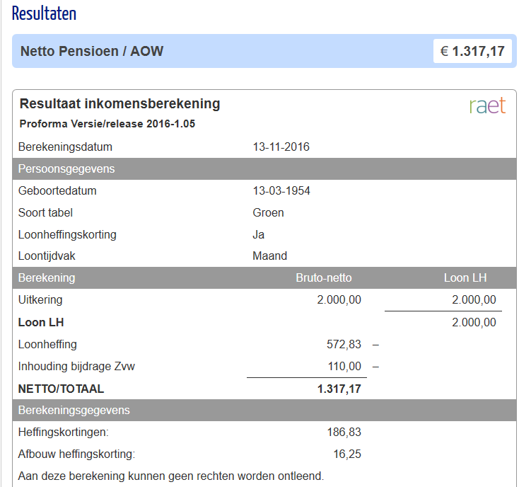
Screen clipping taken: 13-Nov-16, 9:29
Hoeveel belasting betalen op uw pensioen?
Iedereen moet belasting betalen op zijn pensioen, maar niet iedereen betaalt evenveel. Het bedrag hangt voor een groot deel af van de hoogte van uw pensioen. Uw jaarlijkse pensioen is namelijk een bruto en geen netto bedrag. Hierop moet u eerst nog belasting betalen. Deze belasting bestaat uit een loonbelasting, een inkomensafhankelijke bijdrage voor de Zorgverzekeringswet en een premie voor de volksverzekering. U moet niet zelf deze belasting betalen, ze wordt automatisch ingehouden en wat u ontvangt is uw netto pensioen.
Eens u 65 bent zult u hoogst waarschijnlijk minder belasting betalen dan voorheen. Dit komt doordat het bedrag voor de algemene ouderdomswet komt te vervallen. Daardoor ligt het netto loon hoger bij een pensioen dan bij een identiek brutoloon. Wanneer uw pensioen en Aow uitkering samen echter 18.218 euro overstijgen, dan zal u vermoedelijk een hogere belasting betalen. U moet dit verschil in belasting betalen nadat de belastingdienst dit verrekent heeft met een naheffing. Wanneer dit verschil hoog is, kunt u de belasting betalen in termijnen. Een andere optie is het aanvragen van een voorlopige aanslag bij de belastingdienst, zo weet u dadelijk of zult moeten bijbetalen of niet.
Pasted from <http://belastingbetalen.com/belasting-betalen-over-pensioen/>
Vervroegd pensioen is fiscaal aantrekkelijk
Ook is het mogelijk de vervroegde pensioenuitkering aan te vullen met een bedrag ter hoogte van je latere AOW-uitkering. Fiscaal is dit ook nog interessant omdat hiervoor een extra vrijstelling geldt, net als voor de hoog/laag-constructie.
Fiscaal verandert er het een en ander bij ingang van de AOW. Er is sprake van een verlaging van de premie- en belastinglast voor de eerste twee belastingschijven. Vaak blijft hierdoor het netto inkomen bijna gelijk, ook al is het bruto gedaald.
Pasted from <http://www.iexgeld.nl/Artikel/257934/Eerder-met-pensioen-Ja-dat-kan.aspx>
Fiets Birgit
18 January, 2018
22:05
Aaa
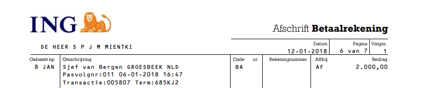
Screen clipping taken: 18-Jan-18, 22:05
Vergoeding Fysio
25 April, 2018
22:55
Klacht:
L.S.,
Na herhaalde telefonische gesprekken (3 stuks) hebben uw medewerkers mij niet duidelijk kunnen maken waarom de rekeningen van de fysiotherapie van ijn vrouw niet worden vergoed uit de aanvullende verzekering.
Alle aangevoerde argumenten heeft men niet zwart op wit in de polisvoorwaarden of wettelijke bepalingen kunnen laten zien.
Ik mag toch als verzekerde verwachten dat ik zelf kan teruglezen of een door jullie genomen besluit correct is.
Het gaat om de fysiotherapie behandeling van mijn vrouw.
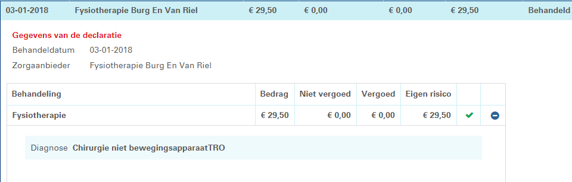
Er wordt geschermd met,
"het gaat hier om post operatieve fysiotherapie"
En dus komt het volgens
<quote>
18 jaar en ouder: 2. Fysiotherapie, oefentherapie Cesar/Mensendieck en oedeemtherapie: a. Chronische aandoeningen: u hebt recht op vergoeding van de kosten van de eerste 20 behandelingen tot maximaal uw budget. Vanaf de 21e behandeling hebt u recht op vergoeding van de kosten vanuit de zorgverzekering. Hiervoor is vooraf een verwijzing van uw huisarts, bedrijfsarts of medisch specialist en onze toestemming vereist. Deze chronische aandoeningen zijn vastgesteld door de minister van Volksgezondheid, Welzijn en Sport (VWS). U vindt deze in de Lijst met aandoeningen voor fysiotherapie en oefentherapie (bijlage 1 van het Besluit zorgverzekering). b. Niet-chronische aandoeningen: u hebt recht op vergoeding van de kosten van de behandelingen tot maximaal uw budget. U krijgt in dit geval geen vergoeding uit de zorgverzekering (uw aandoening komt niet voor in de Lijst met aandoeningen voor fysiotherapie en oefentherapie).
<end quote>
Niet in aanmerking voor vergoeding vanuit de aanvullende verzekering.
Als ik vervolgens vraag om mij dat aan te wijzen in de genoemde overheidslijst
http://wetten.overheid.nl/BWBR0018492/2018-01-01#Bijlage1
Kan men dat niet en Krijg ik een vaag antwoord dat het voor postoperatieve zorg altijd geldt, terwijl de lijst van het ministerie juist heel specifiek is omtrent de post operatieve zorg.
Bijkomend probleem is dat ik de rekening niet heb (want die is rechtstreeks door de fysiotherapeut naar u gestuurd), U belast hem rechtstreeks aan mij door, maar stuurt niet een kopie van de rekening. Rare manier van zaken doen.
Dus bij deze kunt u de rekening of een kopie daarvan naar mijn vrouw sturen ?
Nog een probleem, op https://mijn.umczorgverzekering.nl/Pages/m/verzekeringsgegevens.aspx staan onjuiste verwijzingen, zie plaatje
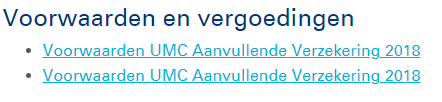
Samenvattend 2 zaken:
Met vriendelijke groet,
Stef Mientki
Klantnummer van mijn vrouw B.J.M. Ratering Arntz 24-11-56, 8085958502
============================
Vanaf 18 jaar: (beperkte) fysiotherapie en oefentherapie van de 21e behandeling bij aandoeningen die op de chronische lijst staan.
De eerste 20 behandelingen betaalt u meestal zelf
Screen clipping taken: 26-Apr-18, 10:38
Unczorgverzekering: 0900 - 80 18
Pasted from <https://www.umczorgverzekering.nl/klantenservice/contact>
B.J.M. Ratering Arntz (24-11-1956)
Klantnummer van UMC Zorgverzekering:8085958502
BSN: 113025221
Pasted from <https://mijn.umczorgverzekering.nl/Pages/m/mijngegevens.aspx>
Regelgeving
De aanspraak op vergoeding voor fysiotherapie of oefentherapie staat beschreven in:
Hier is de echte lijst http://wetten.overheid.nl/BWBR0018492/2018-01-01#Bijlage1
https://zorgvergoeding.com/page/86/chronische-lijst-van-aandoeningen/
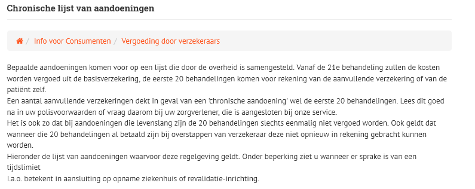
Screen clipping taken: 25-Apr-18, 23:15
CHIRURGIE NIET BEWEGINGSAPPARAAT KOMT NIET VOOR OP DEZE LIJST
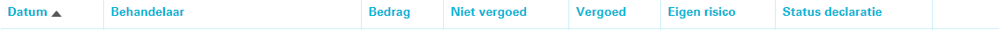
Screen clipping taken: 25-Apr-18, 23:14
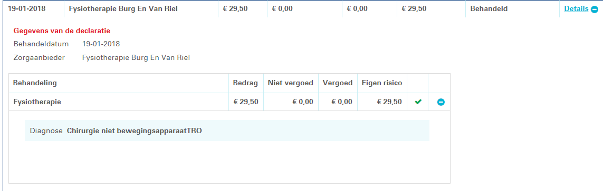
Screen clipping taken: 25-Apr-18, 23:14
Fietskooppunten
20 June, 2018
12:10
App
Online Plannen
https://www.route.nl/routeplanner
https://fietsroutenetwerk.nl/#
https://www.anwb.nl/fietsen/fietsknooppuntenplanner
ANM
18 June, 2018
21:42
Geachte heer
Een nieuwe Adviesraad Natuur en Milieu in de gemeente Mook en Middellaar: oproep voor leden!
De adviesraad functioneert als een deskundig adviesorgaan zonder last of ruggespraak, en kan het College op het terrein van natuur en milieu, vroegtijdig gevraagd en ongevraagd adviseren.
Inwoners
Dit gebeurt door betrokken en deskundige inwoners van de gemeente. Dit levert meerwaarde op bij besluitvorming, voor zowel het proces als het resultaat.
Beleidsterreinen
De Adviesraad zal zich vanaf zijn oprichting richten op de genoemde beleidsterreinen. Wanneer de nieuwe Omgevingswet in werking treedt wordt bekeken of het beleidsterrein van de adviesraad moet worden uitgebreid tot de gehele fysieke leefomgeving. De adviesraad wordt gevormd door inwoners met expertise op het gebied van natuur en milieu. Hij bestaat uit minimaal 3 tot maximaal 5 leden. De adviesraad is bevoegd om deskundigen uit te nodigen om hem van nadere expertise te voorzien. De leden nemen zitting op basis van deskundigheid en op persoonlijke titel. De leden evenals de gevraagde experts en deskundigen vertegenwoordigen hierin geen organisatiebelang.
De Adviesraad
De Adviesraad is per besluit van de Gemeenteraad op 8 maart 2018 opgericht en de nieuwe leden van deze adviesraad worden benoemd door het College van Burgemeester en Wethouders. De leden zijn onbezoldigd en krijgen ondersteuning vanuit het ambtelijk apparaat van de gemeente. Het mandaat, de samenstelling en de werkwijze van de Adviesraad Natuur en Milieu zijn geregeld in de verordening. Deze adviesraad vraagt nu om bevlogen en competente leden uit de gemeente Mook en Middelaar op het terrein van Natuur en Milieu!
Onderstaand treft u de profielschets voor de leden aan:
Bevoegdheden en verantwoordelijkheden:
Werkervaring en opleiding
Vaardigheden & Persoonlijke kenmerken
Vergoeding
U werkt op vrijwillige basis. Voor de ANM is een beperkt werkbudget beschikbaar.
Wilt u meer informatie of solliciteren?
Voor informatie over de inhoud van de functie of de procedure kunt u bellen met mr. J. de Graaf, telefoonnummer (06) 48 77 05 47. Solliciteren is mogelijk tot en met 20 juni 2018 per e-mail via vacatures@mookenmiddelaar.nl.
Created with Microsoft Office OneNote 2007
One place for all your notes and information